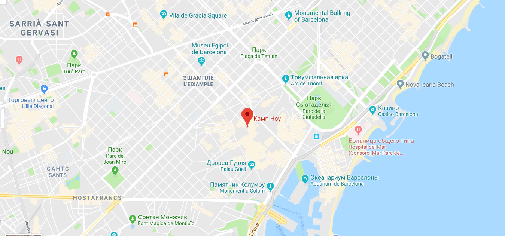

Стадион футбольного клуба «Барселона» называется «Камп Ноу». Официальное открытие стадиона состоялось 24 сентября 1957 года. С момента своего открытия в 1957 году стадион принадлежал каталонскому футбольному клубу и вначале был назван Estadi del FC Barcelona (Стадион ФК «Барселона»), тем не менее уже тогда его называли Камп Ноу. Официально своё нынешнее название он получил в 2000 году. «Камп Ноу» — самый большой по вместимости стадион не только в Испании, но и во всей Европе: он вмещает 99 354 зрителя. «Камп Ноу» перестраивался несколько раз. Впервые это произошло в 1981 году: стадион был расширен для проведения на нём матчей чемпионата мира по футболу 1982 года, проходившего в Испании; вместимость «Камп Ноу» была увеличена до 120 000 зрителей. Вторая перестройка была осуществлена в 1998 году в связи с введением УЕФА новых правил, предписывающих то, что все места должны быть снабжены сиденьями. Для того, чтобы стадион сохранил как можно больше мест, пришлось опустить уровень газона. В настоящий момент вместимость стадиона составляет 99 354 зрителей. Размеры футбольного поля — 105x68 метров. «Камп Ноу» — один из немногих европейских стадионов, которые УЕФА оценивает в пять звёзд. На территории стадиона находится официальный центр служащих ФК «Барселона», офис руководства и музей футбольного клуба, который является самым часто посещаемым музеем в Каталонии. Кроме того, «Камп Ноу» — это главная часть комплекса, в который также входит «Мини-эстади» — двадцатитысячный стадион, на котором тренируются команды спортивной школы клуба, «Ла Масия» — здание, где живут самые юные воспитанники клуба, и «Сине-гранатовый дворец» — корпус на 8 000 зрителей, где выступают баскетбольные, гандбольные, хоккейные и мини-футбольные команды клуба.